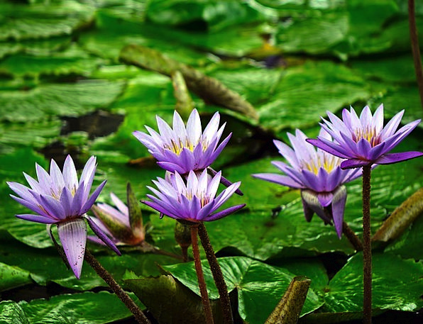
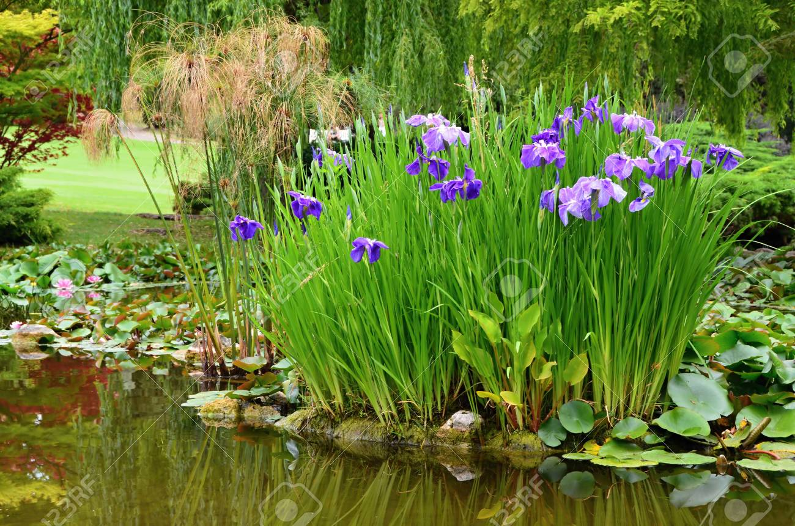

Aquatic plants are a very important step in achieving a truly balanced ecosystem pond. Regardless of why you got into the water gardening hobby, adding aquatic plants to the pond is an important part of the water garden. They provide beauty and naturalization with a huge array of plant choices.
Most importantly, they help balance the pond’s ecosystem and provide valuable biological filtration that removes nitrogen, ammonia, nitrates and other minerals from pond water. These excess nutrients are often the cause of unsightly water conditions. The end result helps to minimize pond maintenance, leaving more time to enjoy your pond. Without aquatic plants, your pond would not be able to function as a complete ecosystem(1)

Purple Water Lily
Blue Star Water Lily
Sacred Egyptian Water Lily
Purple Water LilyBlue Star Water Lily
Sacred Egyptian Water Lily
Water Lilies
Water lilies are among the most popular of aquatic plants and are often the centerpiece of the water garden. A water garden never seems complete without a few beautiful water lilies. Not only are water lilies breathtaking but they provide valuable shade, which helps to keep the pond cool while providing refuge for pond fish. Ideally, thirty to sixty percent of the water surface should be covered with aquatic plants.(1) See Water Lilies

Water Iris
Marginals
The marginal plant group is the largest aquatic plant group by far, containing both hardy and tropical plants. Most of them are true perennials and come back year after year, like your favorite Daylily or Black-Eyed Susan. Marginal plants serve many functions such as adding beauty and providing valuable filtration. They are called “marginals” because they typically grow around the edges or “margins” of a pond or lake. Marginal plants thrive in wet soil or standing water that covers the crown or base of the plant by as little as two inches and up to as much as six inches. Some examples of marginals include sweet flag, marsh marigold, taro, canna, water iris and creeping jenny.(1)See Water Iris
Floaters
Floating plants do just as their name indicates: they float on the water’s surface. Their roots dangle beneath the plant absorbing all their nutrients from the water. Most floating plants do a great job of filtering ponds by removing nutrients directly from the water as opposed to the soil where most other aquatic plants are situated or planted.(1)
Submerged
Like the name implies, this group of plants lives below the water surface. They are commonly referred to as oxygenators. Submerged aquatics do produce oxygen during most of the day. Submerged aquatic plants live entirely under water, almost. Some oxygenators bloom and the flowers often rise to the surface. They include plants such as elodea, anacharis, hornwort, foxtail, cabomba and vallisneria. For the most part, submerged plants absorb their nutrients directly from the water. This means they compete with algae for nutrients, thereby helping to balance the ecosystem.(1)